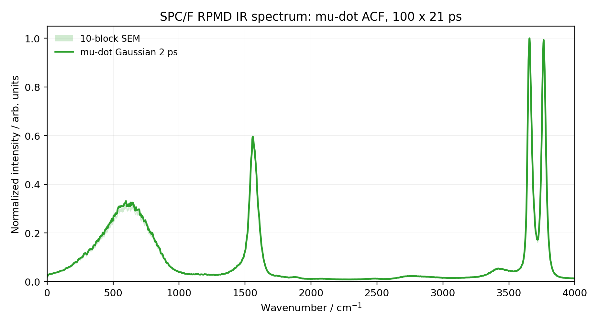
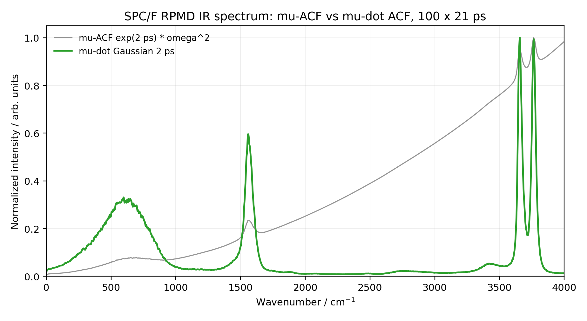
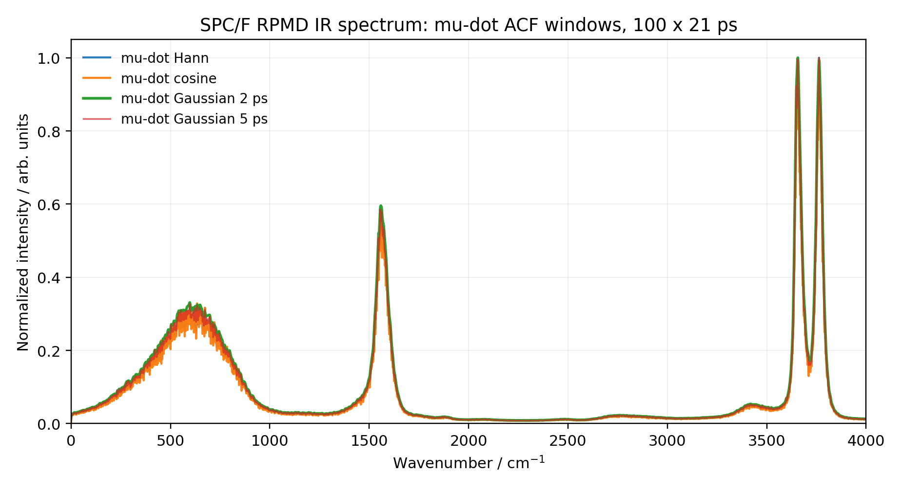

Molecular Dynamics
RPMD Water IR Spectrum with SPC/F
This note records a reproducible fallback calculation inspired by the RPMD water infrared spectrum benchmark of Habershon, Fanourgakis, and Manolopoulos. The original target was Fig. 1 of their TTM3-F liquid-water study at 300 K. Because a convenient periodic TTM3-F implementation was not available in my i-PI/LAMMPS stack, I used the flexible fixed-charge SPC/F model and focused on reproducing the workflow, the spectral estimator, and the numerical diagnostics rather than claiming an exact TTM3-F reproduction.
Background
Infrared absorption spectra are a useful test for approximate quantum dynamics because they probe both intermolecular librations and intramolecular vibrations. The reference work compared RPMD and partially adiabatic CMD for liquid water with the flexible, polarizable TTM3-F potential. It found similar behavior below about \(2500\ \mathrm{cm^{-1}}\), but also reported that the RPMD O-H stretching region can be contaminated by internal ring-polymer modes.
My calculation keeps the same spirit: liquid water at 300 K, 128 molecules, 32 beads, short NVE RPMD branches, and an infrared spectrum from dipole time correlations. The important deviation is the force field. SPC/F is flexible but fixed-charge, so the cell dipole is a direct charge-weighted molecular dipole rather than the polarizable TTM3-F dipole used in the paper.
Principle
The absorption coefficient is commonly written in terms of a Kubo-transformed total-dipole autocorrelation function:
RPMD approximates the Kubo-transformed real-time correlation by evolving the ring-polymer Hamiltonian and averaging over independent microcanonical branches sampled from a path-integral equilibrium distribution. In practice, the absolute prefactor is often less important than the spectral shape, especially for a workflow test; the spectra below are therefore normalized to their maximum intensity between 0 and \(4000\ \mathrm{cm^{-1}}\).
The same spectrum can be estimated from the dipole-derivative autocorrelation. If boundary terms vanish,
This identity explains why multiplying a dipole ACF spectrum by \(\omega^2\) and Fourier transforming a dipole-derivative ACF target the same physical response. Numerically, however, they behave differently. The direct \(C_{\mu\mu}\) route is sensitive to finite-trajectory offsets, slow residual drift, and noisy long-lag tails; multiplying by \(\omega^2\) can turn those small errors into a rising high-frequency baseline. The \(\dot{\mu}\)-ACF estimator removes constant dipole offsets before the correlation is formed and is much less sensitive to the low-frequency drift that caused the first trial spectrum to tilt upward.
Workflow
The production workflow used i-PI as the path-integral driver and LAMMPS as the force engine. The simulation cell contained 128 water molecules at \(0.997\ \mathrm{g\,cm^{-3}}\), represented by 32 beads at 300 K. After a 150 ps NVT equilibration, I launched independent 21 ps RPMD/NVE branches with momenta resampled between branches. The timestep was \(0.25\ \mathrm{fs}\). To make the run practical, the production branches were split into four parallel batches and later frozen into a 100-trajectory analysis set.
For each trajectory, the total dipole vector was written as a CSV time series. The analysis then followed these steps:
- Read the dipole vector \(\boldsymbol{\mu}(t)\) for each branch.
- Compute \(\dot{\boldsymbol{\mu}}(t)\) by a centered finite difference using \(\Delta t=0.25\ \mathrm{fs}\).
- Compute the vector autocorrelation \(C_{\dot{\mu}\dot{\mu}}(t)\) by FFT for each trajectory.
- Average the autocorrelation over 100 trajectories.
- Apply a Gaussian time window with a 2 ps width for the recommended spectrum.
- Fourier transform, normalize the 0 to \(4000\ \mathrm{cm^{-1}}\) region, and estimate uncertainty from ten 10-trajectory blocks.
Result
The recommended SPC/F spectrum uses the dipole-derivative ACF with a 2 ps Gaussian window. The three visible bands are centered at about \(597\ \mathrm{cm^{-1}}\), \(1558\ \mathrm{cm^{-1}}\), and \(3657\ \mathrm{cm^{-1}}\). These are useful workflow diagnostics, not a claim of quantitative agreement with TTM3-F or experiment.

The main numerical issue in the first analysis was not the RPMD internal-mode artifact itself, but an artificial baseline drift produced by the direct dipole-ACF route. The comparison below shows the practical difference. The \(\omega^2\mathcal{F}\{C_{\mu\mu}\}\) estimator has a rising high-frequency tail, while the \(C_{\dot{\mu}\dot{\mu}}\) estimator produces a flatter baseline and cleaner bands.

I also checked the effect of the window. With no window, the dipole-derivative estimator no longer shows the monotonic drift that affected the direct dipole-ACF estimator, but it has stronger ringing and rougher peak shapes. The Gaussian, Hann, cosine, and longer Gaussian windows keep the same main spectral regions while trading resolution for smoother tails.

Code
The published analysis scripts are intentionally small. The main Python script reads dipole CSV files, computes the centered finite-difference dipole derivative, forms FFT autocorrelations, applies a selectable window, writes spectra, and optionally writes block-SEM data and a PNG plot. The shell script is the driver used on the analysis directory.
WINDOW=gaussian WINDOW_WIDTH_PS=2.0 BLOCK_SIZE=10 \
bash paper_analysis/run_mudot_analysis.sh \
paper_analysis/avg100_20260527_115757/dipole_file_list.txt \
paper_analysis/mudot_avg100Takeaways
- The calculation is a reproducible SPC/F fallback, not an exact TTM3-F reproduction of the published figure.
- The physically motivated target quantity is \(n(\omega)\alpha(\omega)\), but the present plots report normalized spectral shape in arbitrary units.
- The \(C_{\dot{\mu}\dot{\mu}}\) estimator is numerically preferable for this data because it removes the artificial high-frequency baseline drift seen in the direct \(C_{\mu\mu}\) route.
- Windowing is a numerical smoothing choice. It reduces finite-time ringing, but it is not a cure for the physical RPMD high-frequency internal-mode contamination discussed in the reference paper.
Reference
S. Habershon, G. S. Fanourgakis, and D. E. Manolopoulos, "Comparison of path integral molecular dynamics methods for the infrared absorption spectrum of liquid water," J. Chem. Phys. 129, 074501 (2008). DOI: 10.1063/1.2968555.